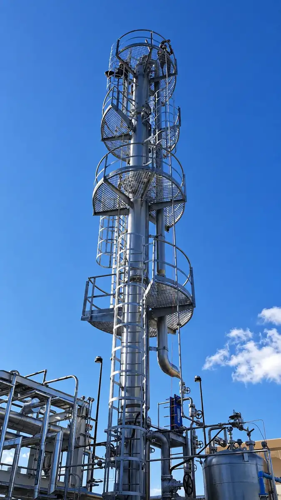

01
Définir les prochaines preuves requises
Déterminer quels aspects du comportement du procédé, du débit, de la pureté, de la stabilité, de la qualité des données ou de la tenue en service des équipements doivent être démontrés avant de poursuivre.
Une expérience concluante ne répond pas à toutes les questions liées à la démonstration ou au déploiement commercial.
Une expérience concluante ne règle pas toutes les questions liées à la démonstration ou au déploiement commercial. Le système suivant doit tenir compte des équipements, des utilités, de l’instrumentation, des plages d’exploitation, de la facilité d’entretien, de la sécurité et des données probantes nécessaires à la prochaine décision d’investissement.

Point de départ technique
Les premiers travaux peuvent établir la faisabilité et les plages de fonctionnement. Les systèmes ultérieurs doivent définir les fonctions des équipements, les commandes, les accès pour l’entretien et les critères d’acceptation pour des campagnes plus longues et de nouvelles interfaces sur site. La prochaine étape utile dépend des incertitudes restantes, et non de la taille apparente des équipements.
Explorer nos phases d’ingénierie
Considérations techniques
Questions types pour définir la portée. Les réponses orientent la portée, les livrables et les critères d’acceptation de votre projet.
Déterminer quels aspects du comportement du procédé, du débit, de la pureté, de la stabilité, de la qualité des données ou de la tenue en service des équipements doivent être démontrés avant de poursuivre.
Traduire les bases de conception du procédé en fonctions des équipements, matériaux, raccordements aux utilités, instruments, commandes, implantation et interfaces sur site.
Déterminer quels éléments peuvent rester flexibles et lesquels doivent refléter le déploiement futur : disponibilité, nettoyage, démarrage, facilité d’entretien et automatisation.
Transformer les enseignements des essais pilotes et du premier déploiement en normes, critères d’essai, exigences d’approvisionnement et procédures d’exploitation documentées.
Chaque projet exige un responsable technique désigné, une base d’acceptation et une portée proportionnée à son contexte d’exploitation.
Logique de définition de la portée
L’objectif est de distinguer ce qui est connu, ce qui doit être conçu et les prochaines preuves nécessaires.
Plages de fonctionnement, bilans, instrumentation et plan pour réduire les incertitudes les plus importantes.
Équipements représentatifs, exploitabilité, intégration sur site, preuves d’acceptation et responsabilités techniques claires.
Maîtrise de la configuration, interfaces normalisées, plans d’essai documentés et transfert des enseignements de la première installation.
Séquence de réalisation
Les étapes contractuelles restent distinctes. Le passage de l’Ingénierie de base et faisabilité à l’Ingénierie détaillée ou à la Conception et construction intégrées n’est pas automatique.
Première discussion
Une première discussion utile porte sur les bases existantes, l’incertitude technique et le jalon qu’elle touche. Un devis technique complet n’est pas nécessaire pour commencer à clarifier la portée.
Préparer une demande techniqueQuestions fréquentes
Non. Une usine pilote sert généralement à apprendre et à valider le comportement du procédé. FOAK désigne le premier déploiement significatif d’une technologie ou d’une configuration dans son contexte prévu; cette désignation dépend du projet réel.
Non. L’Ingénierie de base et faisabilité, l’Ingénierie détaillée et la Conception et construction intégrées peuvent faire l’objet de mandats rémunérés distincts, avec une décision après chaque étape.
Grandissons ensemble